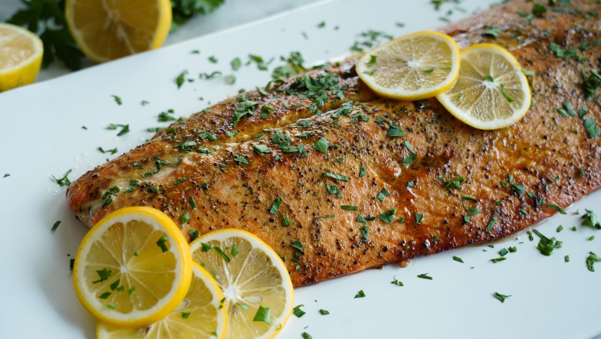

Description
Moist and tender salmon with a slightly sweet and salty crust—it's the perfect bite! This recipe is easy and a nice choice to serve for guests who aren't used to eating salmon. Garnish with lemon slices and fresh parsley and serve alongside rice pilaf or roasted sweet potatoes.
Ingredients
- cooking spray
- butter
- molasses
- salmon
- lemon
Steps
- Preheat the oven to 425 degrees F (220 degrees C). Line a rimmed baking sheet with foil and spray with nonstick spray.
- Stir butter and molasses together in a small bowl.
- Lay salmon, skin-side down, on the prepared baking sheet. Spread butter mixture evenly over the salmon. Sprinkle with Greek seasoning and drizzle with ½ of the lemon juice
- Roast in the preheated oven until salmon flakes easily with a fork, 17 to 20 minutes.
- Sprinkle with remaining lemon juice and serve.
Return to top
Return to main page